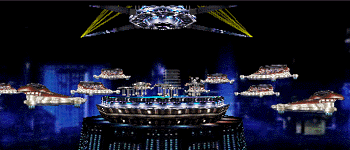
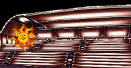
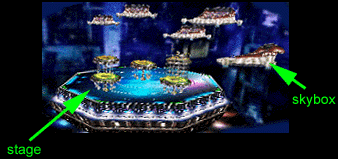
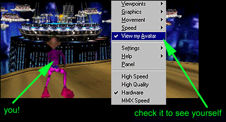
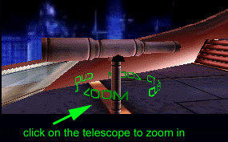
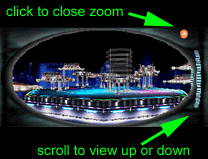
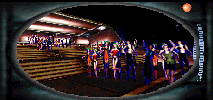

|
Requirements | Get Into the Concert | Get an Avatar | No Sound? | Telescope | Stuck? | After the Show
* * * * * * For optimized experience, recommended system resources include: Pentium 266 compatible or faster with at least 32MB RAM and Microsoft Windows 95/98/Me/2000. Any 3d accelerator card will improve performance considerably. A minimum connection speed of 56K is recommended. Make sure that if you have a 3-D accelerator card, that your settings for 3d are set to "Hardware". (Right click in the 3d window and scroll down to choose Hardware.) If that choice is not available to you, select High Quality. Next, make sure you have downloaded the free RealPlayer 8 Basic in order to hear the music. If you need extra help please consult the The RealPlayer 8 support page. Okay, now on to the good
stuff - your 3D experience and "Vapor Transmission"!
Cybertown's amphitheater has a selection of Skyboxes - like private rooms - that can accommodate 20 people each. They all offer terrific views of the 3D stage - there's no such thing as a lousy seat! So when you click on ENTER EVENT a window will pop up asking you to select a Skybox. If you want to change Skyboxes, click on the "CHANGE SKYBOX" button in the right hand frame and the Skybox choices will once again pop up. Before the show starts, feel free to move into any Skybox that has less than 20 occupants or go back to the Lobby to find your friends. After the show begins, it is recommended that you don't change Skyboxes often because the music will restart and will cut off when the next song begins.  Upon entering the 3D amphitheater, if you should get an error or can't hear any music, use the "CHANGE SKYBOX" button to reload your Skybox or try loading into a Skybox with fewer occupants. The 3D amphitheater you'll be entering is rather cool (if we do say so ourselves). Once inside a Skybox, you will see that you are amid tiers of seating.  Look out over the balcony railing. The stage (and light show) is at the center of the arena. You'll see that surrounding the stage are other floating Skyboxes.  To move about, use your mouse. Place your cursor in the 3D window and move it up and down to get closer to and further away from objects. Moving your mouse/cursor right or left directs you that way in the 3D world as well. Practice! You can't mess
anything up. If you end up getting stuck in a wall,
right click in the window and choose Viewpoints, then choose reset. This
will reset your position.
Dance to the music with your choice of an animated avatar! Look in the right hand frame and click on "Dancing Avatars". Choose the one you'd like to wear. Want to see what you look like? Right click in the 3D window. A settings window will pop up. Click on "View My Avatar"! Click on it again to revert to normal viewing. 
TO ZOOM IN & GET A CLOSER VIEW: In your Skybox, to the right, you'll notice a telescope.  Click on it and use your mouse/cursor to "look" around the amphitheater. You can't walk around while using the telescope.  You can get up close to the band avatars or check out the audience in the other Skyboxes.  Have fun! Always remember that it's virtually impossible to blow it. Remember, if you get stuck, you can right click and choose "Viewpoints" and hit reset. We look forward to having
you settle in Cybertown after tonight's event so please check out the overview
of the cyber lifestyle available to you here in town by clicking the "VISIT-EXPLORE-DISCOVER
CYBERTOWN" button in the control panel in the right hand frame.
. |